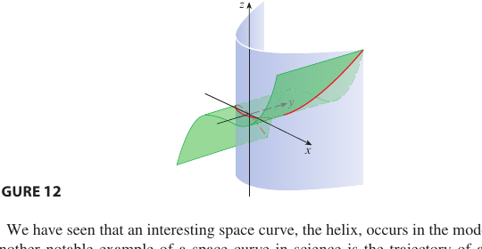

Chapter 13 · Vector Functions and Space Curves
Vector valued functions $\vec r(t)$ and what calculus does to them. Tangents, arc length, curvature, motion, projectiles, and Taylor approximation of curves. The recurring object is a curve in space, a moving tip whose velocity and turning we read off one derivative at a time.
13.1 Vector Functions and Space Curves
1D in 3DA vector function $\vec r(t) = \langle f(t), g(t), h(t)\rangle$ assigns a vector to each $t$ in its domain. The tip of $\vec r(t)$ traces a space curve in $\mathbb R^3$ as $t$ varies.
Limits and continuity act component by component.
$\vec r$ is continuous at $a$ iff each component is.
Direction of traversal. Arrowheads show direction as $t$ increases. Replacing $t$ by $-t$ (or running from $b$ to $a$) flips the arrow.
Example. The helix $\vec r(t) = \langle \cos t,\ \sin t,\ t\rangle$ projects to a circle in $xy$ while $z$ climbs linearly with $t$.
Curves as intersections. A space curve often arises as the intersection of two surfaces. Below, the cylinder $x^2 + y^2 = 1$ meets the plane $z = x + y$ in the ellipse $\vec r(t) = \langle\cos t, \sin t, \cos t + \sin t\rangle$.

13.2 Derivatives and Integrals of Vector Functions
1D in 3DDerivative. $\vec r\,'(t) = \displaystyle\lim_{h \to 0} \dfrac{\vec r(t + h) - \vec r(t)}{h} = \langle f'(t),\ g'(t),\ h'(t)\rangle.$ Here $\vec r\,'$ is tangent to the curve, pointing the way the motion goes.
Unit tangent vector. $\vec T(t) = \dfrac{\vec r\,'(t)}{|\vec r\,'(t)|}.$
Differentiation rules look just like the scalar ones.
- $(\vec u + \vec v)' = \vec u\,' + \vec v\,'$
- $(c\vec u)' = c\vec u\,'$ and $(f \vec u)' = f'\vec u + f \vec u\,'$
- $(\vec u \cdot \vec v)' = \vec u\,' \cdot \vec v + \vec u \cdot \vec v\,'$
- $(\vec u \times \vec v)' = \vec u\,' \times \vec v + \vec u \times \vec v\,'$
Theorem. If $|\vec r(t)| = c$ is constant, then $\vec r\,'(t) \perp \vec r(t)$. Proof. Differentiate $\vec r \cdot \vec r = c^2$ to get $2\vec r\,' \cdot \vec r = 0$.
Integral. $\displaystyle \int_a^b \vec r(t)\,dt = \langle \int_a^b f\,dt,\ \int_a^b g\,dt,\ \int_a^b h\,dt\rangle.$
13.3 Arc Length and Curvature
1D in 3DArc length. The step element is $ds \approx |\vec r\,'(t)|\,dt$ by Pythagoras component by component, so
Arc-length function $s(t) = \int_a^t |\vec r\,'(u)|\,du$, so $ds/dt = |\vec r\,'(t)|$ is the speed.
Curvature. Curvature measures how fast the unit tangent direction turns per unit of arc length. A line has $\kappa = 0$, and a circle of radius $R$ has $\kappa = 1/R$, so $1/\kappa$ is the radius of the best-fitting circle.
Why the cross-product form works. Only the component of $\vec r\,''$ perpendicular to the motion turns the curve, and the cross product with $\vec r\,'$ retains exactly that component, so $|\vec r\,'\times\vec r\,''| = |\vec r\,'|\,|\vec r\,''_\perp|$. At speed $v$ the turning component of acceleration is $\kappa v^2$, so the numerator is $\kappa v^3$ and dividing by $|\vec r\,'|^3 = v^3$ leaves $\kappa$.
The denominator $|\vec r\,'|^3$ is the cube of the speed, not the speed. Curvature is always $\ge 0$, and the absolute values in both $\dfrac{|\vec r\,'\times\vec r\,''|}{|\vec r\,'|^3}$ and $\dfrac{|f''|}{(1+(f')^2)^{3/2}}$ are there to keep it nonnegative.
For a plane curve $y = f(x)$ the curvature is $\;\kappa = \dfrac{|f''(x)|}{(1 + (f'(x))^2)^{3/2}}.$
Principal unit normal. $\vec N(t) = \dfrac{\vec T\,'(t)}{|\vec T\,'(t)|}.$ Points toward the centre of curvature on the concave side.
Radius of curvature. $\rho = 1/\kappa$. The osculating circle has radius $\rho$ and centre $\vec r(t) + \rho \vec N(t)$, the best-fitting circle, matching the curve's first and second derivatives there.
Below, $\vec r(t) = \langle\cos t,\ \sin t,\ 0.05\,t^2\rangle$ climbs faster and faster. The osculating circle, radius $1/\kappa$, grows as the speed increases and the bending weakens.
13.4 Motion in Space
1D in 3DIf $\vec r(t)$ is the position of a particle, then $\vec v(t) = \vec r\,'(t)$ is velocity, $|\vec v(t)| = ds/dt$ is speed, and $\vec a(t) = \vec v\,'(t) = \vec r\,''(t)$ is acceleration.
Tangential/normal decomposition.
Where these come from. The dot product keeps the part of $\vec a$ along the motion and the cross product keeps the part across it. The turning term $a_N = \kappa|\vec v|^2$ is the circular motion formula $v^2/R$ with $\kappa = 1/R$.
Because $\vec T\perp\vec N$, the two components satisfy $|\vec a|^2=a_T^2+a_N^2$. So once you have $a_T$ you can get $a_N=\sqrt{|\vec a|^2-a_T^2}$ without computing a cross product.
$a_T$ is the speed-up/slow-down part, $a_N$ the turning (centripetal) part.
Projectile motion. $\vec a = -g\hat\jmath$. Integrate twice with initial $\vec r(0)$ and $\vec v(0)$.
Fire from the origin at angle $\alpha$, speed $v_0$, so $\vec v(0) = (v_0 \cos\alpha)\hat\imath + (v_0\sin\alpha)\hat\jmath$. Then
Range $R = v_0^2 \sin 2\alpha / g$, biggest at $\alpha = \pi/4$.
The range formula assumes equal launch and landing height. $R=v_0^2\sin 2\alpha/g$ holds only when the projectile returns to its starting height. If it lands higher or lower, do not use it. Solve $y(t)=y_{\text{land}}$ for the flight time and substitute into $x(t)$.
13.5 Taylor Approximation of Space Curves
1D in 3DApply the scalar Taylor expansion component by component. Since $\vec r(t) = \langle f, g, h\rangle$, each one satisfies
Stacking gives
Geometric meaning. The linear truncation gives the tangent line. Adding the quadratic term gives the osculating parabola in the $T$, $N$ plane. Higher terms hug the curve more tightly.
Example. Take $\vec r(t) = (t,\ t^2/2,\ t^3/6)$, its own Taylor series at $t_0 = 0$. The linear truncation is the $x$-axis tangent, the quadratic adds the $xy$-plane parabola, and the cubic adds the $z$ wiggle, which here is the full curve.
Worked example
Tangential and normal acceleration on a projectile. $\vec r(t) = \langle v_0\cos\alpha\,t,\ v_0\sin\alpha\,t - \tfrac12 g t^2\rangle$.
$\vec v = \vec r\,' = \langle v_0\cos\alpha,\ v_0\sin\alpha - gt\rangle$, speed $|\vec v| = \sqrt{(v_0\cos\alpha)^2 + (v_0\sin\alpha - gt)^2}$.
$\vec a = \vec r\,'' = \langle 0,\ -g\rangle$, so $|\vec a| = g$ for all $t$.
Tangential component $a_T = \vec a \cdot \vec T = \dfrac{\vec a \cdot \vec v}{|\vec v|} = \dfrac{-g(v_0\sin\alpha - gt)}{|\vec v|}$.
At the apex $t = v_0\sin\alpha / g$, $\vec v = \langle v_0\cos\alpha, 0\rangle$ is horizontal and $\vec a = \langle 0, -g\rangle$ is perpendicular to it, so $a_T = 0$ and $a_N = g$, and all of gravity is turning the body.
Arc length and curvature on a helix. $\vec r(t) = \langle \cos t,\ \sin t,\ t\rangle$.
$\vec r\,' = \langle -\sin t, \cos t, 1\rangle$, $|\vec r\,'| = \sqrt 2$, so $L = \int_0^{2\pi}\!\sqrt 2\,dt = 2\sqrt 2\,\pi$.
$\vec r\,'' = \langle -\cos t,\ -\sin t, 0\rangle$, $\vec r\,'\times\vec r\,'' = \langle\sin t,\ -\cos t,\ 1\rangle$ of magnitude $\sqrt 2$, so $\kappa = \sqrt 2/(\sqrt 2)^3 = 1/2$.
Practice problems
- Sketch the directed curve $\vec r(t) = \langle 3\cos t,\ 3\sin t,\ 2\rangle$, $0 \le t \le 2\pi$. Indicate the direction.
- Given $\vec r(t) = \langle t^2,\ \sin t,\ e^t\rangle$, find $\vec v(t)$ and $\vec a(t)$ at $t = 0$.
- Find the unit tangent vector $\vec T(t)$ and unit normal $\vec N(t)$ for the helix $\vec r(t) = \langle \cos t,\ \sin t,\ t\rangle$.
- Find the curvature of the parabola $y = x^2$ at the origin.
- Find the length of the arc of the helix $\vec r(t) = \langle \cos t,\ \sin t,\ t\rangle$ from $t = 0$ to $t = 2\pi$.
- Find the tangential and normal components of acceleration for $\vec r(t) = \langle t,\ t^2,\ 3t\rangle$.
- A projectile is fired with initial speed $500$ m/s at angle $30^\circ$. Find the range.
Strategies
Smooth curve. $\vec r$ is smooth on $I$ when $\vec r\,'$ is continuous and $\vec r\,' \ne \vec 0$ on $I$.
Tangent line at $t_0$. $\vec L(s) = \vec r(t_0) + s\,\vec r\,'(t_0)$.
Reparametrize by arc length. Compute $s(t) = \int_a^t |\vec r\,'(u)|\,du$, invert for $t(s)$, then $\vec r(t(s))$ has unit speed. Curvature is defined with respect to $s$ so that it measures geometry rather than speed.
Choosing a curvature formula. $\kappa = |d\vec T/ds|$ is the definition, $\kappa = |\vec T\,'(t)|/|\vec r\,'(t)|$ converts to an arbitrary parameter, and $\kappa = |\vec r\,'\times\vec r\,''|/|\vec r\,'|^3$ avoids computing $\vec T$. For $y = f(x)$ the last reduces to $|f''|/(1+(f')^2)^{3/2}$.
Osculating, normal, rectifying planes. Spanned by $\vec T, \vec N$, by $\vec N, \vec B$, and by $\vec T, \vec B$ respectively.
Acceleration has no $\vec B$ component. $\vec a = a_T\vec T + a_N\vec N$ always lies in the osculating plane.